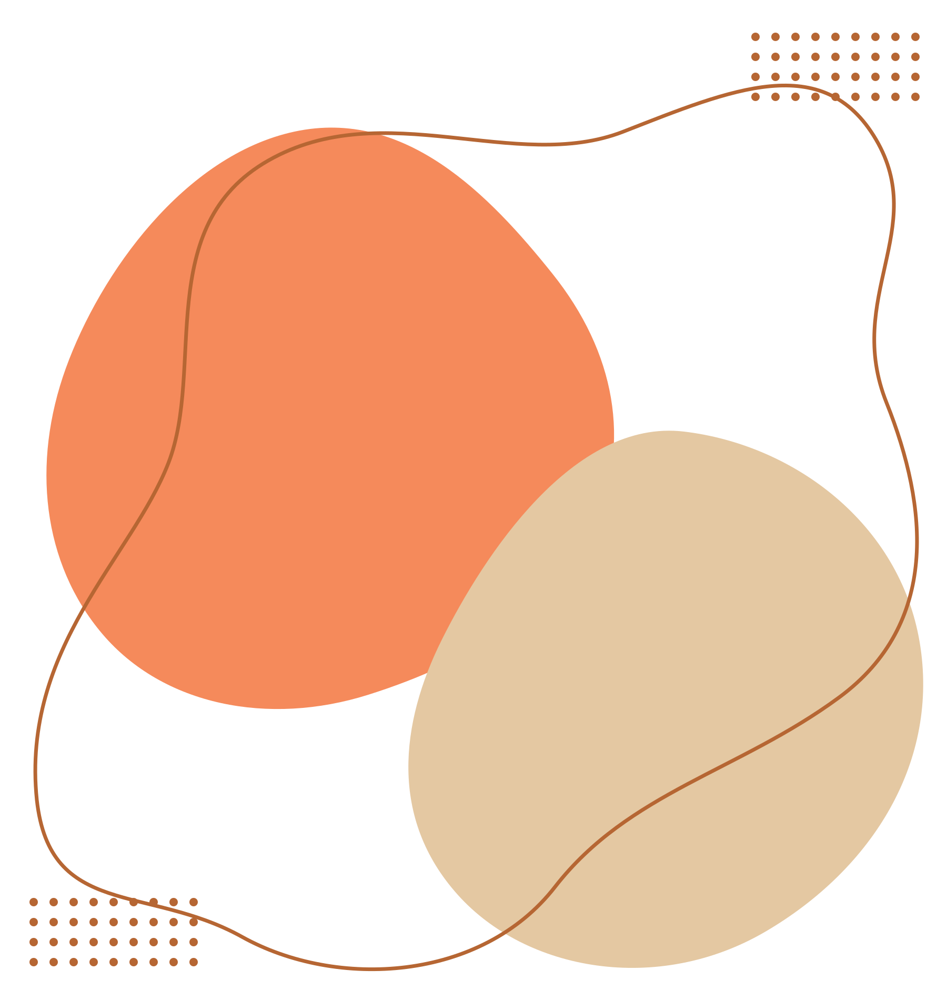

UX/UI-Case-Study · Konzeptarbeit
UX/UI-Case-Study · Konzeptarbeit
Muka
Eine Website im Editorial-Stil für eine lokale Handwerksbäckerei
Muka ist ein Website-Konzept für eine lokale Bäckerei, die täglich backt und am selben Tag liefert. Ich habe die visuelle und UI-Richtung festgelegt: eine Landingpage mit neun Abschnitten, die handgemachtes Brot und Gebäck über Material, Textur und Spuren der Handarbeit zeigt.
 ProjektartKonzeptprojekt
ProjektartKonzeptprojekt PlattformResponsive Website
PlattformResponsive Website RolleUX/UI-Designerin
RolleUX/UI-Designerin UmfangVisuelles Konzept und UI
UmfangVisuelles Konzept und UI



 Das Projekt in Zahlen
Das Projekt in Zahlen
- 5Designprinzipien
- 15Kacheln auf dem Moodboard
- 2Schriften
- 4Grundfarben
- 9Abschnitte der Landingpage
- 3Produktkategorien
 01 · Über das Projekt
01 · Über das Projekt
Handgemachtes Brot, ein ruhiges Online-Erlebnis
Eine lokale Handwerksbäckerei, die täglich backt und am selben Tag liefert. Das Projekt zeigt ihr handgemachtes Brot und Gebäck in einem klaren, ruhigen Online-Erlebnis.
Der Ansatz
- Worauf das Design setzt
- Material, Textur und Spuren der Handarbeit statt visuellem Storytelling.
- Das Interface
- Es bleibt zurückhaltend und lässt dem Produkt Raum, damit Vertrauen von selbst entstehen kann, bevor ein Call to Action erscheint.
- Schlüsselbegriffe
- Editorialer Ansatz
- Materialgetriebenes Design
- Handwerksbäckerei
- Lokales Produkt
- Digitales Erlebnis

 02 · Gestaltungsabsicht
02 · Gestaltungsabsicht
Fünf Prinzipien hinter jeder Entscheidung
Jedes Prinzip setzt eine Regel, der die Landingpage folgt: für Struktur, Dekoration, Schrift, Farbe und das Vertrauen, das sie aufbaut.
- 01
Editoriale Struktur
Das Interface ist wie ein Editorial-Layout aufgebaut, mit klarer Hierarchie, Pausen und einem ruhigen Leserhythmus.
- 02
Visuelle Zurückhaltung
Das Design verzichtet bewusst auf dekorative Elemente und hält die Aufmerksamkeit bei Produkt und Inhalt.
- 03
Typografie als Struktur
Die Schrift ordnet den Inhalt, lenkt die Aufmerksamkeit und gibt der ganzen Seite ihren Ton.
- 04
Farbe als Atmosphäre
Farbe schafft Stimmung und Tiefe. Sie soll weder Aufmerksamkeit erzwingen noch das Interface dominieren.
- 05
Auf Vertrauen ausgerichtet
Die Seite hilft Besuchenden, sich sicher zu fühlen, bevor sie eine Entscheidung treffen.
 03 · Moodboard
03 · Moodboard
Moodboard und Referenzen
Das Board gibt den Ton der Marke vor: das Muka-Logo, Nahaufnahmen von Kruste und Mehl, arbeitende Hände, ein Bäckereifenster und Brot in warmem Licht.
- Auf dem Board
- Fünfzehn Kacheln in einem Raster von 3 × 5 unter dem Logo: acht Fotos, sechs Textzeilen und noch einmal das Logo in der Mitte.
- Sätze auf dem Board
- “Freshly baked every morning, crafted with care.”
- “We bake with simple ingredients: flour, water, time, and love.”
- “Morning favorites”
- “Handcrafted daily”
- “The smell alone makes my mornings better”
- “Order now”
- Schlusssatz
- Bread that feels like home

 04 · Typografie und Farbe
04 · Typografie und Farbe
Zwei Schriften, vier Farben
Die Typografie baut die Struktur, die Farbe setzt die Atmosphäre. Jede Farbe hat ihre eigene Rolle; der Akzent markiert die interaktiven Elemente.
- Cormorant GaramondÜberschriften · Bold · 96 / 104
- Work SansFließtext · Regular · 24 / 36
- 4Grundfarben, jede mit eigener Rolle
- Primärer Akzent · #B66633Inspiriert von gebackener Kruste und Hitze. Für interaktive Elemente, um die Aufmerksamkeit zu lenken.
- Dunkler Hintergrund#2A2A2A · Tiefe und Fokus für helle Schrift
- Sanftes Neutral#E4C8A2 · ein warmer Ton, der die dunklen Flächen ausgleicht
- Heller Text#F6EFE9 · Fließ- und Nebentexte auf dem dunklen Hintergrund
- 2Schriften: eine Serifenschrift für die Überschriften, eine serifenlose zum Lesen
Schrift und Farbe im Detail
Frames verschieben

 05 · Design der Landingpage
05 · Design der Landingpage
Eine Seite, neun Abschnitte
Die Seite führt vom Versprechen und der Art, wie das Brot entsteht, über Sortiment und Bestellung zu Bewertungen, der Geschichte der Bäckerei und einer Anmeldung für das Tagesangebot.
-
01
Header
Das Logo, Links zu Bread, Pastries, Pies, How we bake und Story sowie ein Button Order now mit Kontur.
-
02
Hero
„Baked by hand“ mit „hand“ in der Akzentfarbe, die Zeile „Simple ingredients. Real taste“ und das erste Order now. Das Brot steht auf einem Akzentblock mit einem weißen Pinselstrich.
-
03
How we bake
Ein kurzer Text über langsames, ehrliches Backen, dann zwei Blöcke mit Fotos: Natural ingredients und Baked by hand.
-
04
Our assortment
Drei Kategorien mit je einem Foto, einem Icon und einer Zeile: Bread, Sweet pastries und Pies.
-
05
Bestellung
„Order fresh, taste warm“ auf einer braunen Karte mit einem Kuchen, die Zeile „Fresh bread is one click away“ und das zweite Order now, direkt nach den Produkten.
-
06
Loved by many
Die Durchschnittsbewertung, ein Button zu allen Bewertungen auf Google Maps und seitlich scrollende Bewertungskarten mit Foto, Name, Stadt und Sternen.
-
07
Our story
Drei Schritte mit Fotos der Bäcker: The beginning, Our philosophy und Today.
-
08
Fresh to your door
Ein E-Mail-Feld, um zu bestellen oder das Tagesangebot zu bekommen.
-
09
Fußzeile
Das Logo mit seinem Weizen-Zeichen, das Menü, die Stadt, eine Telefonnummer und eine E-Mail-Adresse.
 06 · Ergebnis
06 · Ergebnis
Klarheit, Wärme und ehrliche Entscheidungen
Ein Bäckerei-Konzept mit Blick für Struktur, Rhythmus und Atmosphäre.
Das Moodboard gibt die Stimmung vor, die fünf Prinzipien setzen die Regeln; Schrift und Farbe setzen beides auf einer Landingpage mit neun Abschnitten um.
Brot, das sich wie Zuhause anfühlt
- 01
Moodboard und Referenzen
- 02
Fünf Designprinzipien
- 03
System aus Schrift und Farbe
- 04
Eine Landingpage mit neun Abschnitten


 Wohnort: Hachenburg, Deutschland
Wohnort: Hachenburg, Deutschland
Gestalten wir für echte Bedürfnisse
Ich suche eine Stelle als UX/UI-Designerin in Deutschland. Schreiben Sie mir eine E-Mail, rufen Sie an oder melden Sie sich über LinkedIn oder Telegram.